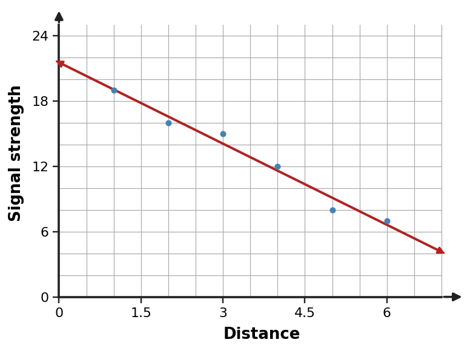
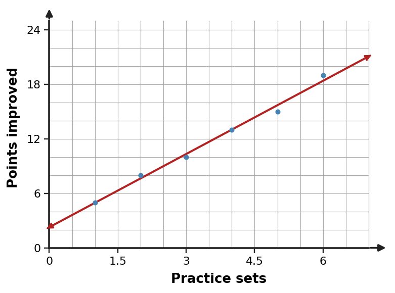
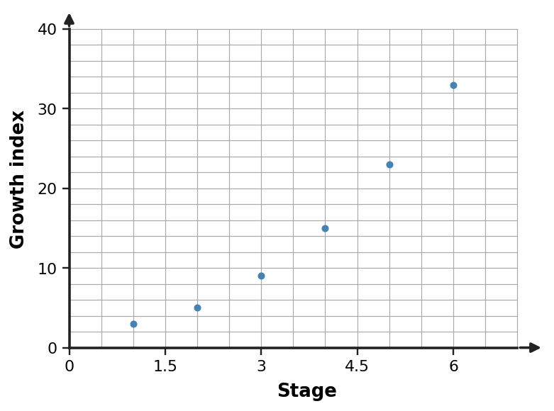

Algebra Extra Practice 2.5
1. Describe the trend in the scatter plot and decide whether a linear model is reasonable for the displayed data. Support your decision with the pattern of points.

2. Describe the trend in the scatter plot and decide whether a linear model is reasonable for the displayed data. Support your decision with the pattern of points.

3. Describe the trend in the scatter plot and decide whether a linear model is reasonable for the displayed data. Support your decision with the pattern of points.

4. A linear model is $y=\frac{3}{2}x+8$. Use the model to predict $y$ when $x=10$ and interpret the result as a model prediction rather than an exact observed value.
5. A linear model is $y=-2x+60$. Use the model to predict $y$ when $x=12$ and interpret the result as a model prediction rather than an exact observed value.
6. A linear model is $y=5x-4$. Use the model to predict $y$ when $x=6$ and interpret the result as a model prediction rather than an exact observed value.
7. A model for savings is $S=12w+35$, where $w$ is weeks and $S$ is dollars. Interpret both the slope and intercept in context.
8. A model for a rental cost is $C=8h+22$, where $h$ is hours and $C$ is dollars. Interpret both the slope and intercept in context.
9. A model for temperature is $T=-1.5h+70$, where $h$ is hours and $T$ is degrees. Interpret both the slope and intercept in context.
10. A data set has no clear upward or downward trend, but a student reports a strong positive linear model. Assess the reasoning.
11. A linear model fits well between $x=0$ and $x=12$. A student assumes it must remain accurate at $x=200$. Assess the reasoning.
12. A scatter plot shows a tight negative linear band. A student says a linear model is unreasonable because the slope is negative. Assess the reasoning.
13. A study records ages 12 through 18. Predicting a value at age 25: classify the prediction as interpolation or extrapolation.
14. A model uses data from days 2 through 10. Predicting day 7: classify the prediction and state why it is usually safer than predicting day 30.
15. A model uses distances from 0 to 50 miles. Predicting at 65 miles: classify the prediction and state one caution.
16. Use the observed-versus-predicted table to judge whether the model errors are small and balanced enough for a rough trend estimate. Identify the largest absolute error.
| Input | Observed | Predicted | Observed - Predicted |
|---|---|---|---|
| 1 | 39 | 40 | -1 |
| 2 | 45 | 44 | 1 |
| 3 | 50 | 48 | 2 |
| 4 | 50 | 52 | -2 |
17. Use the observed-versus-predicted table to judge whether the model errors are small and balanced enough for a rough trend estimate. Identify the largest absolute error.
| Input | Observed | Predicted | Observed - Predicted |
|---|---|---|---|
| 1 | 27 | 25 | 2 |
| 2 | 28 | 29 | -1 |
| 3 | 33 | 33 | 0 |
| 4 | 38 | 37 | 1 |
18. Use the observed-versus-predicted table to judge whether the model errors are small and balanced enough for a rough trend estimate. Identify the largest absolute error.
| Input | Observed | Predicted | Observed - Predicted |
|---|---|---|---|
| 1 | 48 | 50 | -2 |
| 2 | 55 | 54 | 1 |
| 3 | 57 | 58 | -1 |
| 4 | 64 | 62 | 2 |
19. A student has 15 dollars and adds 8 dollars each week. Let $w$ be weeks and $S$ be savings. Write an equation that models the situation.
20. A rental begins with a 12-dollar fee and costs 4 dollars per hour. Let $h$ be hours and $C$ be cost. Write an equation that models the situation.
21. A candle starts 36 cm tall and burns down 3 cm each hour. Let $h$ be hours and $H$ be height. Write an equation that models the situation.
22. A pattern follows the rule $y=x+9$. Find the output for $x=8$ and give the ordered pair.
23. A pattern follows the rule $y=4x-6$. Find the output for $x=3$ and give the ordered pair.
24. A pattern follows the rule $y=-x+15$. Find the output for $x=9$ and give the ordered pair.